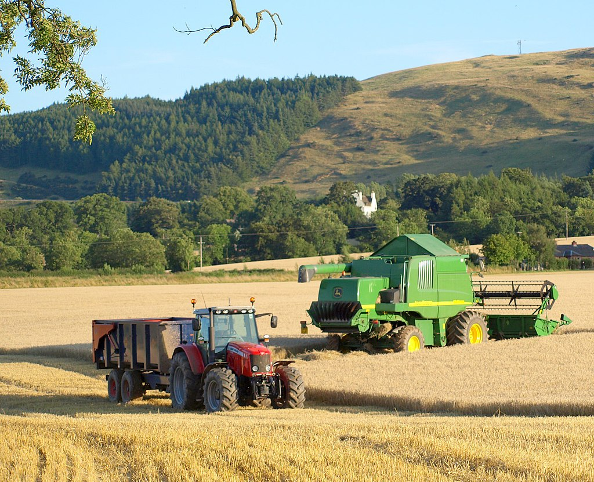

About Ancrum Farm Village
Originally a working farm, but after the passing of their father the McTaggart family embarked on a change of direction and sought to utilise Acrum farm as a place for recreation, noticing a lack of anything similar nearby. They spent well over a year of redevelopment to make it ready for the public and Eliza's love for animals can be noticed when you visit the petting zoo she has established with docile, older animals who benefit from the McTaggart's compassion.
Ancrum Farm Village's goal is provide a recreational greenspace, a sanctuary for animals where they get to enage with the public and make a sustainable business out of their passion project.
